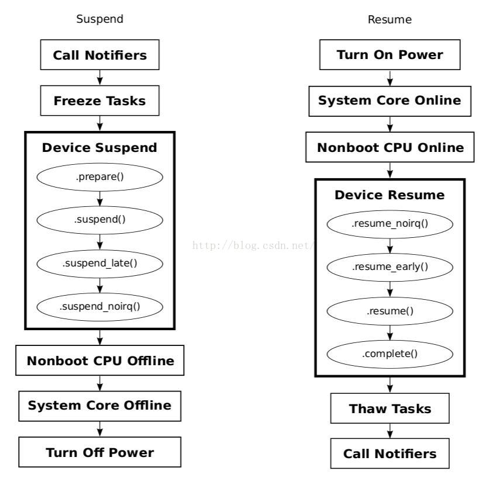

概述
Linux内核提供了三种Suspend: Freeze、Standby和STR(Suspend to RAM)，在用户空间向”/sys/power/state”文件分别写入”freeze”、”standby”和”mem”，即可触发它们。
内核中，Suspend及Resume过程涉及到PM Core、Device PM、各个设备的驱动、Platform dependent PM、CPU control等多个模块，涉及了console switch、process freeze、CPU hotplug、wakeup处理等过个知识点。就让我们跟着内核代码，一一见识它们吧。
参考
Suspend功能有关的代码分布
内核中Suspend功能有关的代码包括PM core、Device PM、Platform PM等几大块，具体如下：
PM Core
kernel/power/main.c----提供用户空间接口(/sys/power/state)
kernel/power/suspend.c----Suspend功能的主逻辑
kernel/power/suspend_test.c----Suspend功能的测试逻辑
kernel/power/console.c----Suspend过程中对控制台的处理逻辑
kernel/power/process.c----Suspend过程中对进程的处理逻辑
Device PM
drivers/base/power/*
Platform dependent PM
include/linux/suspend.h----定义platform dependent PM有关的操作函数集
arch/xxx/mach-xxx/xxx.c或者
arch/xxx/plat-xxx/xxx.c----平台相关的电源管理操作
简述
用户可以通过sys文件系统控制系统进入休眠：
查看系统支持的休眠方式：
#cat /sys/power/state
Linux支持STANDBY、挂起到RAM、挂起到硬盘等形式的待机，如图所示。常见有standby(suspendto RAM)、mem(suspend toRAM)和disk(suspend todisk)，只是standby耗电更多，返回到正常工作状态的时间更短。
一般的嵌入式产品仅仅只实现了挂起到RAM（也简称为s2ram，或常简称为STR），即将系统的状态保存于内存中，并将SDRAM置于自刷新状态，待用户按键等操作后再重新恢复系统。少数嵌入式Linux系统会实现挂起到硬盘（简称STD），它与挂起到RAM的不同是s2ram并不关机，STD则把系统的状态保持于磁盘，然后关闭整个系统。

通过echo mem > /sys/power/state让系统进入休眠。
标准Linux休眠过程：
powermanagement notifiers are executed with PM_SUSPEND_PREPARE
tasksare frozen
targetsystem sleep state is announced to the platform-handling code
devicesare suspended
platform-specificglobal suspend preparation methods are executed
non-bootCPUs are taken off-line
interruptsare disabled on the remaining (main) CPU
latesuspend of devices is carried out (一般有一些BUSdriver的动作进行)
platform-specificglobal methods are invoked to put the system to sleep
标准linux唤醒过程：
themain CPU is switched to the appropriate mode, if necessary
earlyresume of devices is carried out(一般有一些BUSdriver的动作进行)
interruptsare enabled on the main CPU
non-bootCPUs are enabled
platform-specificglobal resume preparation methods are invoked
devicesare woken up
tasksare thawed
powermanagement notifiers are executed with PM_POST_SUSPEND
下面图片对Linux suspend&resume过程做了一个概述，读者可以顺着这个流程阅读内核源代码。具体的说明，可以参考后面的代码分析。

在用户空间执行如下操作：
echo "mem" > /sys/power/state
会通过sysfs触发suspend的执行，相应的处理代码如下：
static ssize_t state_store(struct kobject *kobj, struct kobj_attribute *attr,
const char *buf, size_t n)
{
suspend_state_t state;
int error;
error = pm_autosleep_lock();
if (error)
return error;
if (pm_autosleep_state() > PM_SUSPEND_ON) {
error = -EBUSY;
goto out;
}
state = decode_state(buf, n);
if (state < PM_SUSPEND_MAX) {
if (state == PM_SUSPEND_MEM)
state = mem_sleep_current;
error = pm_suspend(state);
} else if (state == PM_SUSPEND_MAX) {
error = hibernate();
} else {
error = -EINVAL;
}
out:
pm_autosleep_unlock();
return error ? error : n;
}
休眠休眠软件流程
android 休眠唤醒机制分析(三) — suspend 以上这篇文章对每个函数进行了详细的分析。
include/linux/suspend.h休眠唤醒通知，一般只需关注PM_POST_SUSPEND和PM_SUSPEND_PREPARE即可，如下定义：
/* Hibernation and suspend events */
#define PM_HIBERNATION_PREPARE 0x0001 /* Going to hibernate */
#define PM_POST_HIBERNATION 0x0002 /* Hibernation finished */
#define PM_SUSPEND_PREPARE 0x0003 /* Going to suspend the system */
#define PM_POST_SUSPEND 0x0004 /* Suspend finished */
#define PM_RESTORE_PREPARE 0x0005 /* Going to restore a saved image */
#define PM_POST_RESTORE 0x0006 /* Restore failed */
休眠流程请关注
syscore_suspend，syscore_resume。唤醒流程关注当我们按下某个按键并且这个按键是唤醒源的话，就会唤醒CPU，上面讲到调用
enter函数后就真正进入休眠了，会阻塞在enter，当系统唤醒后会调用syscore_resume来执行唤醒流程。
static int suspend_enter(suspend_state_t state, bool *wakeup)
{
error = syscore_suspend();
if (!error) {
*wakeup = pm_wakeup_pending();
if (!(suspend_test(TEST_CORE) || *wakeup)) {
trace_suspend_resume(TPS("machine_suspend"),
state, true);
error = suspend_ops->enter(state); //真正进入休眠，阻塞
trace_suspend_resume(TPS("machine_suspend"),
state, false);
} else if (*wakeup) {
error = -EBUSY;
}
syscore_resume();//suspend过程中，唤醒事件发生，系统唤醒，该函数接着执行resume动作，并最终返回。resume动作基本上是suspend的反动作
}
}
* state_store //(kernel/power/main.c)
└── pm_suspend //(kernel/power/suspend.c)
├── error = enter_state(state);//(kernel/power/suspend.c)
│ ├── valid_state(state) //(kernel/power/suspend.c) 检查单板是否支持电源管理，就是全局suspend_ops有没有被赋值，并调用其suspend_ops->valid()
│ │ └── return suspend_ops && suspend_ops->valid && suspend_ops->valid(state);
│ ├── suspend_prepare(state); //(kernel/power/suspend.c)
│ │ ├── pm_prepare_console(); //(kernel/power/console.c)
│ │ ├── pm_notifier_call_chain(PM_SUSPEND_PREPARE) //(kernel/power/main.c) 通知所有关心这个消息的驱动程序！依次调用静态全局链表pm_chain_head中的每一个函数
│ │ └── suspend_freeze_processes(); //(kernel/power/power.h) 冻结App和内核线程
│ ├── suspend_devices_and_enter(state); //(kernel/power/suspend.c) 让设备进入suspend状态
│ │ ├── platform_suspend_begin(state)
│ │ │ └── suspend_ops->begin //如果平台相关的代码有begin函数就去调用它，例如Renesas的平台进入suspend时需要一些预先准备工作，就可以实现这个begin函数
│ │ ├── suspend_console(); //(kernel/printk/printk.c) 串口suspend状态，此时串口就用不了了
│ │ ├── dpm_suspend_start(PMSG_SUSPEND); //(drivers/base/power/main.c)
│ │ │ ├── dpm_prepare(state); //(drivers/base/power/main.c)对全局链表dpm_list(drivers/base/power/power.c)中的每一个设备都调用其prepare函数，在这里面可以做一些准备工作
│ │ │ │ ├── dev->pm_domain->ops.prepare 或 [struct dev_pm_ops ops]
│ │ │ │ ├── dev->type->pm->prepare 或 [struct dev_pm_ops *pm]
│ │ │ │ ├── dev->class->pm->prepare 或 [struct dev_pm_ops *pm]
│ │ │ │ ├── dev->bus->pm->prepare 或 [struct dev_pm_ops *pm]
│ │ │ │ └── dev->driver->pm->prepare 或 [struct dev_pm_ops *pm] [struct device_driver中的在这，优先级最低]
│ │ │ └── dpm_suspend(state); //(drivers/base/power/main.c) 对全局链表dpm_prepared_list中的每一个设备都调用device_suspend()
│ │ │ ├── device_suspend(dev); //(drivers/base/power/main.c)
│ │ │ │ ├── __device_suspend(dev, pm_transition, false);
│ │ │ │ │ └── dpm_wait_for_subordinate(dev, async);
│ │ │ │ │ ├── dpm_wait_for_children(dev, async); //(drivers/base/power/main.c) 等待其每一个孩子进入suspend状态
│ │ │ │ │ └── dpm_wait_for_consumers(dev, async);
│ │ │ │ ├── dev->pm_domain->ops->suspend //因此自己在写驱动的时候可以在其pm_domain中或type->pm中或class->pm中或bus->pm中加入suspend函数
│ │ │ │ ├── dev->type->pm->suspend
│ │ │ │ ├── dev->class->pm->suspend
│ │ │ │ └── dev->bus->pm->suspend
│ │ │ └── suspend_enter(state, &wakeup); //(kernel/power/suspend.c) 设备都进入suspend状态了接下来就是CPU了
│ │ │ ├── platform_suspend_prepare(state);
│ │ │ │ └── suspend_ops->prepare //单板的prepare函数若存在就调用
│ │ │ ├── dpm_suspend_late(PMSG_SUSPEND); //(drivers/base/power/main.c) 对全局静态链表dpm_suspended_list中的每一个条目都调用device_suspend_late()
│ │ │ │ └── device_suspend_late(dev); //(drivers/base/power/main.c) 调用此设备的
│ │ │ │ └── __device_suspend_late(dev, pm_transition, false);
│ │ │ │ ├── dev->pm_domain->ops->suspend_late 或
│ │ │ │ ├── dev->type->pm->suspend_late 或
│ │ │ │ ├── dev->class->pm->suspend_late 或
│ │ │ │ ├── dev->bus->pm->suspend_late 或
│ │ │ │ └── dev->driver->pm->suspend_late 或
│ │ │ ├── platform_suspend_prepare_late(state);
│ │ │ │ └── suspend_ops->prepare_late //调用单板相关的函数，可以做一些清理，若单板不需要也可以不实现它
│ │ │ ├── disable_nonboot_cpus(); //(kernel/cpu.c) 多核Soc中非用于启动内核的CPU叫做nonboot_cpu，停止non-boot CPU
│ │ │ ├── arch_suspend_disable_irqs(); //(include/linux/suspend.h)//关闭中断，extern的，Renesas上没有实现
│ │ │ ├── //休眠流程
│ │ │ ├── syscore_suspend(); // 关闭核心模块
│ │ │ │ └── *wakeup = pm_wakeup_pending()//还得调用pm_wakeup_pending检查一下，这段时间内，是否有唤醒事件发生，如果有就要终止suspend。
│ │ │ │ └── if (!(suspend_test(TEST_CORE) || *wakeup))
│ │ │ │ └── suspend_ops->enter(); // 如果一切顺利，调用suspend_ops的enter回调，进行状态切换。这时，系统应该已经suspend了
│ │ │ ├── //唤醒流程
│ │ │ ├── syscore_resume //(drivers/base/syscore.c) 对全局链表syscore_ops_list中的每一个node都调用其resume()
│ │ │ ├── arch_suspend_enable_irqs //(include/linux/suspend.h)
│ │ │ ├── enable_nonboot_cpus //(kernel/cpu.c)
│ │ │ ├── platform_resume_noirq(state);
│ │ │ │ └── suspend_ops->wake //如果单板有对应的wake()就调用
│ │ │ ├── dpm_resume_noirq(state); //(drivers/base/power/main.c) 对全局链表dpm_noirq_list中的每一个设备都执行device_resume_noirq
│ │ │ │ └── dpm_noirq_resume_devices(state);
│ │ │ │ ├── device_resume_noirq //(drivers/base/power/main.c) 对每一个设备都调用
│ │ │ │ │ ├── dev->pm_domain->ops->resume_noirq 或
│ │ │ │ │ ├── dev->type->pm->resume_noirq 或
│ │ │ │ │ ├── dev->class->pm->resume_noirq 或
│ │ │ │ │ ├── dev->bus->pm->resume_noirq 或
│ │ │ │ │ ├── dev->driver->pm->resume_noirq 或
│ │ │ │ │ └── //执行完resume_noirq的所有设备都会被放在全局链表dpm_late_early_list中
│ │ │ │ └── dpm_noirq_end();
│ │ │ │ └── resume_device_irqs //(kernel/irq/pm.c)
│ │ │ │ └── resume_irqs //(kernel/irq/pm.c)
│ │ │ │ └── __enable_irq //(kernel/irq/pm.c) 对全局数组irq_desc中的每一个irq都调用__enable_irq，但是Renesas的BSP没有实现，里面还有一个野指针
│ │ │ ├── platform_resume_early(state);
│ │ │ ├── dpm_resume_early(state); //(drivers/base/power/main.c) 对全局链表dpm_late_early_list中的每一个元素都执行device_resume_early
│ │ │ │ └── device_resume_early(dev, state, false); //(drivers/base/power/main.c)
│ │ │ │ ├── dev->pm_domain->ops->resume_early 或
│ │ │ │ ├── dev->type->pm->resume_early 或
│ │ │ │ ├── dev->class->pm->resume_early 或
│ │ │ │ ├── dev->bus->pm->resume_early 或
│ │ │ │ └── dev->driver->pm->resume_early 或
│ │ │ └── platform_resume_finish(state);
│ │ └── suspend_ops->finish() //如果单板有对应的finish()就调用
│ ├── Resume_devices:
│ ├── suspend_test_start //(kernel/power/suspend_test.c)
│ ├── dpm_resume_end(PMSG_RESUME); //(drivers/base/power/main.c)
│ │ ├── dpm_resume(state); //(drivers/base/power/main.c) 对全局链表dpm_suspended_list中的每一个dev都调用device_resume()
│ │ │ └── device_resume(dev, state, false); //(drivers/base/power/main.c)
│ │ │ ├── dev->pm_domain->ops->resume 或
│ │ │ ├── dev->type->pm->resume 或
│ │ │ ├── dev->class->pm->resume 或
│ │ │ ├── dev->bus->pm->resume 或
│ │ │ ├── dev->driver->pm->resume 或
│ │ │ └── //然后将所有的设备移动到全局链表dpm_prepared_list中
│ │ └── dpm_complete(state); //(drivers/base/power/main.c) 对全局链表dpm_prepared_list中的每一个设备都调用device_complete()
│ │ └── device_complete(dev, state); //(drivers/base/power/main.c)
│ │ ├── dev->pm_domain->ops.complete 或
│ │ ├── dev->type->pm.complete 或
│ │ ├── dev->class->pm.complete 或
│ │ └── dev->driver->pm.complete 或
│ ├── suspend_test_finish("resume devices"); //(kernel/power/suspend_test.c) 打印一些log出来
│ ├── resume_console //(kernel/printk.c)
│ │ └── console_unlock(); //(kernel/printk.c)
│ │ └── call_console_drivers(ext_text, ext_len, text, len); //(kernel/printk.c) 关闭本地中断获取spin锁后调用控制台打印函数以poll方式打印内核log
│ ├── Close:
│ ├── platform_resume_end(state);
│ │ └── suspend_ops->end() //如果单板有对应的end()就调用
│ ├── Recover_platform:
│ └── platform_recover(state);
│ └── suspend_ops->recover(); //如果dpm_suspend_start失败或者suspend_test失败，单板有对应的recover()就调用
├── Finish:
├── suspend_finish //(kernel/power/suspend.c)
│ └── suspend_thaw_processes(); //(kernel/power/power.h)唤醒应用程序
│ └── thaw_processes();
├── pm_notifier_call_chain(PM_POST_SUSPEND); //(kernel/power/main.c) 通知关注这个事件的App程序，对全局pm_chain_head->head中的每一个都调用其notifier_call()
└── pm_restore_console(); //(kernel/power/console.c)
suspend/resume过程总结
如下是suspend/resume过程的简图：

以上就是整个系统的suspend/resume执行过程，但是对于一般的驱动开发工程师来说主要关心的是Device Suspend和Device Resume过程。
suspend: prepare->suspend->suspend_late->suspend_noirq
resume： resume_noirq->resume_early->resume->complete
PM notifier
PM notifier是基于内核blocking notifier功能实现的。blocking notifier提供了一种kernel内部的消息通知机制，消息接受者通过notifier注册的方式，注册一个回调函数，关注消息发送者发出的notifier。当消息产生时，消息产生者通过调用回调函数的形式，通知消息接受者。这种调用，是可以被阻塞的，因此称作blocking notifier。
那suspend功能为什么使用notifier呢？原因可能有多种，这里我举一个例子，这是我们日常开发中可能会遇到的。
由之前的描述可知，suspend过程中，suspend device发生在进程被freeze之后，resume device发生在进程被恢复之前。那么：
如果有些设备就需要在freeze进程之前suspend怎么办？
如果有些设备的resume动作需要较多延时，或者要等待什么事情发生，那么如果它的resume动作发生在进程恢复之前，岂不是要阻止所有进程的恢复？更甚者，如果该设备要等待某个进程的数据才能resume，怎么办？
再来看suspend_prepare和suspend_finish中的处理：
static int suspend_prepare(suspend_state_t state) {
…
error = pm_notifier_call_chain(PM_SUSPEND_PREPARE);
if (error)
goto Finish;
error = suspend_freeze_processes();
…
}
static void suspend_finish(void)
{
suspend_thaw_processes();
pm_notifier_call_chain(PM_POST_SUSPEND);
pm_restore_console();
}
原来PM notifier是在设备模型的框架外，开了一个后门，那些比较特殊的driver，可以绕过设备模型，直接接收PM发送的suspend信息，以便执行自身的suspend动作。特别是resume时，可以在其它进程都正好工作的时候，只让suspend进程等待driver的resume。
感兴趣的读者，可以围观一下下面这个活生生的例子:
0017_qcom_pax_charger架构.md
驱动实例
include/linux/pm.h我们一般platform driver采用dev_pm_domain方式注册休眠唤醒ops:
struct dev_pm_ops {
int (*prepare)(struct device *dev);
void (*complete)(struct device *dev);
int (*suspend)(struct device *dev);
int (*resume)(struct device *dev);
int (*freeze)(struct device *dev);
int (*thaw)(struct device *dev);
int (*poweroff)(struct device *dev);
int (*restore)(struct device *dev);
int (*suspend_late)(struct device *dev);
int (*resume_early)(struct device *dev);
int (*freeze_late)(struct device *dev);
int (*thaw_early)(struct device *dev);
int (*poweroff_late)(struct device *dev);
int (*restore_early)(struct device *dev);
int (*suspend_noirq)(struct device *dev);
int (*resume_noirq)(struct device *dev);
int (*freeze_noirq)(struct device *dev);
int (*thaw_noirq)(struct device *dev);
int (*poweroff_noirq)(struct device *dev);
int (*restore_noirq)(struct device *dev);
int (*runtime_suspend)(struct device *dev);
int (*runtime_resume)(struct device *dev);
int (*runtime_idle)(struct device *dev);
};
struct dev_pm_domain {
struct dev_pm_ops ops;
void (*detach)(struct device *dev, bool power_off);
int (*activate)(struct device *dev);
void (*sync)(struct device *dev);
void (*dismiss)(struct device *dev);
};
static const struct dev_pm_ops pax_bat_pm_ops = {
.suspend = pax_battery_suspend,
.resume = pax_battery_resume,
};
static struct platform_driver pax_battery_driver = {
.probe = pax_battery_probe,
.remove = pax_battery_remove,
.driver = {
.name = "battery",
.of_match_table = pax_battery_of_match,
#ifdef CONFIG_PM
.pm = &pax_bat_pm_ops,
#endif
},
};
static int __init pax_battery_init(void)
{
return platform_driver_register(&pax_battery_driver);
}